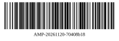

Disclaimers
Amplify is an independent, unofficial prototype. It is not a service of, and is not endorsed by, the UK Youth Parliament, the National Youth Agency or UK Parliament.
Petition 754954 figures come from a snapshot of UK Parliament’s published data taken on 1 October 2026. The petition closed on 11 August 2026, so the counts are final. Screens marked prototype, sample or model show planning figures, not records.
Links to other organisations are for information, not endorsement. Worried about your safety? Go to Safeguarding & support.
Disclosures
Designed in Claude Design and built with Claude, Anthropic’s AI model. AI-made content can contain mistakes: check the linked source before you rely on a figure.
No sign-in, no cookies, no analytics. Settings and any pledges you add are kept in this browser only and are never sent. Every font, script and icon is served by the portal itself. Links to other sites, and the share and calendar buttons, contact those services only when you choose them, under their own terms and age rules.
The copilot answers only where a live model connection is available; elsewhere it says so rather than guessing.
Contact
Questions, corrections and suggestions go through the contact form.
The form is public. Do not include your name, contact details or anything that identifies a young person.
Who is behind it: About Amplify · github.com/cyberdudeuk. Ideas and bugs: Have your say.
Cannot use the form? Ask your MYP, a youth worker or a trusted adult to raise it for you.

Colophon · Amplify · set in Chivo, Space Mono and Atkinson Hyperlegible · six primitives, four cornerstones · build AMP-20261115-3a248221